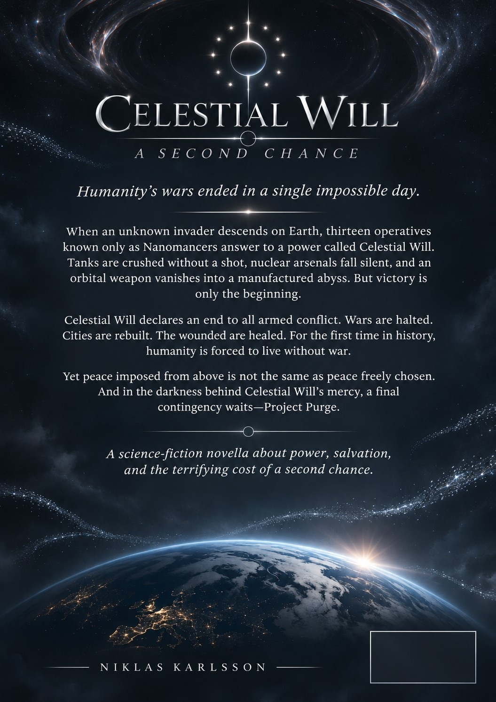

Science fiction · A web novella
Celestial WillA Second Chance
Humanity has been given a second chance.
An unseen organization ends humanity’s wars with technology beyond comprehension. But behind the promise of peace, thirteen figures in the dark are preparing for a future the world knows nothing about.
PDF · 15 pages · 746 KB · Includes front and back covers
Chapters
I. Permission Granted
“Nanomancer 003 is deploying. Enemy tank formation within target area. Requesting permission to deploy gravitational manipulation programs.”
“This is Command. Permission granted.”
Across a sunburned plain, the invasion force advanced beneath a sky without clouds. Tanks moved in staggered columns toward the last civilian evacuation road. Their crews saw no aircraft, no artillery flashes, no evidence of an opposing army. Then the lead tank sank into its own tracks.
Within seconds, the entire armored column was pinned to the earth. Suspensions collapsed, turrets twisted under impossible pressure, and engines screamed against the weight of their own machines. The road beneath remained largely untouched.
“Formation neutralized,” 003 reported. “No ammunition expended.”
Farther north, Nanomancer 013 watched the enemy’s field command through the optics of a surveillance drone. “Command is in sight. Proceeding with capture mission. Do we have extraction?”
“Extraction standing by at Echo. Their command staff is preparing to relocate. You have eight minutes.”
Before 013 could answer, another channel opened. “Nanomancer 008 here. Enemy aircraft on projected attack vector. Requesting permission to unleash Lightning Storm.”
“Authorized. Friendly aircraft are clearing the sector. Keep the effect above ground level. 013 is beneath their flight path.”
Clouds assembled where moments earlier there had been nothing but blue. The first strike of lightning split the sky above the attacking formation. Then another, and another, each bolt finding an aircraft with dreadful precision. The surviving pilots turned away.
The enemy’s answer arrived on the strategic channel.
“Nanomancer 002 reporting. Tactical nuclear weaponry confirmed. Deploying disarmament program.”
Six missiles rose from mobile launchers. Their guidance systems went dark almost at once. At altitude, nanomachines separated firing mechanisms from fissile cores, disabled initiation systems, and redirected the inert remnants toward controlled recovery zones. Across the battlefield, nuclear weapons stored in aircraft and bunkers ceased responding to their operators.
“Nanomancer 002. Disarmament confirmed. Nuclear threat zero percent.”
The command center exhaled as one.
“003 requesting permission to laugh,” came a voice over the network.
“Granted,” Command replied.
The laughter ended when Nanomancer 001 broke in.
“001 requesting confirmation on unleashing gravity well weaponry upon target.”
“Negative pending assessment. The enemy is offering surrender. Identify your target.”
“Enemy space-weapons operations center. Power buildup is accelerating.”
New telemetry flooded the tactical display: an orbital bombardment platform emerging from the planet’s shadow, its inert kinetic projectiles minutes from release. The ground installation controlling it was refusing surrender orders.
“We cannot intercept those projectiles in time,” Overwatch reported.
Command weighed the consequences for a heartbeat. “001, gravity well deployment authorized. Contain the effects to the target area.”
001’s reply was barely a whisper. “May the Creator forgive me for what I’m about to do.”
The stars behind the orbital platform bent inward. Metal stretched toward a point that should not have existed. The platform vanished behind a temporary event horizon; its control facility disappeared with it. Across the planet, gravitational instruments shrieked.
“001, can you shut it down?” Command demanded.
“Compensating for time discrepancy. Sixty seconds to core collapse. Get all friendlies to a safe distance. Remember: the aftershock affects a much larger area.”
Evacuation orders cascaded through the network. 013 lifted off with captured officers. 003 lent the transports impossible acceleration. 008 quieted the turbulent atmosphere along their route. 002 secured the remaining nuclear material.
At zero, the event horizon disappeared. No conventional explosion followed. Instead, a distortion swept through spacetime, briefly bending light and shaking satellites out of their assigned orbits. The worst of it missed the populated world below.
For several seconds, 001 did not answer.
Then: “Nanomancer 001. Alive. Massive radiation damage. Nanomachine core fine. AI core fine. Conducting submolecular repairs. Estimated completion: seventy-eight hours.”
Command closed its eyes. “Bring 001 home.”
II. The Name in the Sky
Forty-eight hours later, a news anchor replayed footage of the orbital platform folding into darkness.
“We have seen an unknown aggressor destroy an installation we did not even know existed. The invading forces have ceased hostilities and withdrawn. Why?”
The military guest seated beside her studied the images. “Because they met something they could not fight.”
“What did they meet?”
“That,” the general said, “is what frightens me.”
The broadcast cut out.
So did every other broadcast on Earth. Televisions, phones, computers and military screens displayed a black field marked with a circle and thirteen surrounding lights. A synthetic voice spoke without introduction.
“This was the work of Celestial Will. We are an unaffiliated organization. As long as we operate, weaponized conflicts will not be tolerated. Test us, and you will find out why you should not.”
Seventeen seconds later, every program resumed.
In the United Nations, diplomats argued over the meaning of the message. Was this protection, occupation, or the declaration of a new world authority? No treaty had given Celestial Will jurisdiction. No state could establish where its people were based. The only certainty was that the organization possessed weapons against which conventional deterrence had already failed.
In Celestial Will’s command center, the debate was less theoretical.
“Nanomancer 003 reporting,” came a field transmission. “Hostile force attacking a civilian convoy. Requesting permission to assist in their defense.”
“Authorized,” Command answered. “Civilian survival takes priority. Use the minimum force required to end the attack.”
Fourteen vehicles were trapped on a highway. The attackers had six armored vehicles and dozens of infantry. A gunner was rotating his turret toward a bus when the entire vehicle rose off the road. Rifles floated out of hands; ammunition separated into harmless components. Within moments, the attackers hovered half a meter above the ground.
“This is Celestial Will,” 003 announced. “Cease hostilities and surrender.”
The surrender was immediate.
The convoy contained political dissidents fleeing a government that had forbidden them to leave. Its military had received orders to stop the buses by force. Nanocore 089 intercepted the command chain: a general demanding an explanation, a defense minister ordering a cover story, and a head of government discussing the elimination of witnesses.
“Do we still have authorization to seize the officials?” asked Nanocore 067. “068 and 069 are in position.”
“Hold until the evidence is verified,” Command said.
The final intercepted message confirmed the order to kill the witnesses. The operation was approved. The three officials were apprehended simultaneously, their armed guards disarmed without injury.
Celestial Will had crossed another boundary. Stopping a battle was one thing; taking a sitting head of government into custody was another.
Its next broadcast made the difference unmistakable.
“Three government officials have been found guilty of war crimes and crimes against humanity,” the voice declared. “Proceedings and evidence have been made available for review. Interested parties have thirty days to submit objections. Unless the convictions or sentences are overturned upon review, death sentences will be carried out.”
The international response was immediate. Lawyers pointed out that the International Criminal Court did not impose capital punishment, and that invoking its principles did not grant Celestial Will its authority. Human-rights organizations demanded independent review. Others, including survivors from the convoy, demanded that powerful officials finally face consequences.
Inside Command, 001 listened from a recovery chamber.
“If someone proves we made an error,” 001 said, “we must be willing to reverse the judgment.”
“Agreed,” Command replied. “The review must be real.”
Yet whatever the outcome of that review, the warning had already reached every government on Earth: Celestial Will considered political office no defense against accountability.
III. Operation Peace
The next announcement did not go to the public. It went to every Celestial Will operative.
“This is Command AI Core. We are proceeding with Operation Peace. All operatives within conflict areas are to suppress hostilities at full capability. All Nanomancers are to deploy under their mission briefings, including those in deep cover.”
Responses arrived from around the world.
“024 reporting. Deep cover terminated.”
“041 reporting. Weapons manufacturing infrastructure secured.”
“056 reporting from naval command. Hostile targeting systems under control.”
“072 reporting. Embedded insurgent leadership identified.”
Some operatives had spent years passing as ordinary soldiers, engineers, analysts and officers. Across the planet, they stood from desks and watch posts and announced who they were.
On a carrier bridge, the communications officer informed his admiral that the fleet’s weapons were disabled. In a command bunker, a trusted intelligence analyst dismantled a general’s pistol before he could draw it. On a ruined front line, shells froze above the trenches and rifles came apart in soldiers’ hands.
The war stopped in fragments: first an artillery exchange, then an airstrike, then a naval confrontation. Commanders discovered that giving an order was no longer the same as being able to execute it.
Within minutes, active engagements had fallen sharply. Within hours, conventional war had become a practical impossibility wherever the Nanomancers chose to intervene.
“What happens when they fight with improvised weapons?” 013 asked.
“We stop the violence, regardless of the weapon,” Command AI answered.
“And when we are gone?” asked 002.
That question lingered in the command center. No program could force two peoples to agree about a border, a faith, or a historical grievance. Peace enforced by an invisible hand was not the same as reconciliation.
Command gave the only answer it had. “We make room for negotiation. Then we let them decide what to do with it.”
The next division activated before the argument could go further.
“Medical Nanomancers 100 through 167,” Command AI announced, “report for duty.”
Sixty-eight new voices answered. They deployed to field hospitals, shattered cities and refugee camps. Microscopic machines stabilized circulation, repaired tissue, neutralized infections and rebuilt damaged organs. Injuries that had ended lives or condemned survivors to permanent disability became treatable, though recovery still demanded care and consent.
At a field hospital, Nanomancer 101 restored a wounded patient's heartbeat while a surgeon watched, speechless.
“What are you?” the surgeon asked.
“A doctor,” 101 replied. “And we have more patients.”
Soon the medical division faced a question no command briefing had settled. Hospitals far from the battlefields were requesting help: children with congenital conditions, people with failing organs, families with diseases that had never had cures.
“Human lives are worth protecting from war,” Nanomancer 100 said to Command. “Are they worth protecting from everything else?”
The answer took the shape of another operation.
IV. Restoration
“Operation Restoration is go,” announced Command AI. “Terraforming and Engineering Nanomancers 168 through 300 are to deploy to areas under the highest humanitarian strain. Restore infrastructure. Ensure food, water and shelter. These are the priorities.”
One hundred and thirty-three operatives reported for duty.
A silver mist moved through shattered neighborhoods. Concrete separated into reusable constituents; steel flowed into new supports; water systems assembled beneath the streets. Buildings rose again, not always as they had been, but safer, warmer and able to withstand the disasters that had once ruined them.
On the edge of a refugee settlement, thousands of homes appeared where families had slept beneath torn plastic. They came with sanitation, electrical power and clean water. In an exhausted agricultural region, Nanomancer 197 restored the soil’s structure while 184 repaired the hydrological network. Farmers knelt to touch dark earth where there had been only dust.
The world watched with a mixture of gratitude and unease. Celestial Will could rebuild a city in days, but who would own the buildings? Who would distribute the water? Who would maintain machines that no human engineer fully understood?
“We can restore the systems,” Nanomancer 300 told Command. “We cannot become the government of every place we restore.”
“Then do not,” Command said. “Transfer management to the communities. Leave them able to sustain themselves.”
The United Nations requested a formal meeting. Governments asked for technology transfers, independent oversight and guarantees that the restored territories would remain sovereign. Their questions were still unanswered when Celestial Will interrupted the world’s screens one final time.
“This is Celestial Will. Operation Restoration is concluded. As long as humanity does not resume hostilities, we will no longer interfere again. Humanity has been given a second chance. Do not squander this opportunity.”
No threat followed. No parade of power. The symbol vanished and the world was left alone with its restored roads, its crowded hospitals, its complicated borders and its suddenly silent guns.
A year passed.
Diplomatic arguments continued. Elections were fought fiercely. Communities struggled over ownership, repairs and resources. Yet the great military campaigns did not resume. Refugees returned. Schools reopened. The absence of war began, little by little, to seem less like an interruption and more like a condition of ordinary life.
“Are they gone?” a news anchor asked on the anniversary of the withdrawal.
“We don't know,” replied the retired general who had first watched the orbital platform disappear. “But the important question may be whether we can learn to live as though nobody is waiting to stop us.”
V. Thirteen in the Dark
The chamber had no windows.
Thirteen silhouettes sat around a circular table. Between them hovered a small blue Earth, cloud systems drifting across its surface. No names appeared on the seats, only numbers.
The Third turned toward the First.
“It seems your predictions were accurate. There was no need for Project Purge.”
“Not yet,” said the First.
“Remember this,” the Third continued. “Even if humanity behaves now, we must preserve our technological advantage. Should they return to their old patterns, we must remain capable of purging the population and repopulating the planet. You understand?”
“Perfectly.”
“Then we agree?”
“On preserving our advantage, yes. On the inevitability of Purge, no.”
The Fourth shifted in the darkness. “That distinction is academic. The contingency exists because humanity may fail.”
“And it remains a contingency,” the First said. “Not a destination.”
The Eleventh called up a second image. Vaults and artificial gestation chambers glimmered beneath the surface of an unmarked world. Genetic archives had been maintained; the machinery required to produce and raise a new human population stood idle.
“We could begin again,” the Eleventh said. “With no inherited borders. No ancient grievances.”
“No inherited memories of our intervention either,” said the Seventh. “What guarantee would the next civilization be different?”
“None,” said the First.
The Third leaned back. “One year of peace does not erase thousands of years of war.”
“Nor did I predict that it would,” the First replied. “I predicted that, once the immediate causes of collapse were removed, humanity might choose another course. We have evidence that it can.”
“Or evidence that it fears us,” the Third countered.
“Perhaps. That is the experiment we are conducting now.”
The Thirteenth finally spoke. “We have withdrawn our operatives. We no longer govern their decisions. But our warning remains. Can a people truly choose peace while an overwhelming force stands ready to punish war?”
Nobody answered at once.
“Obedience is not peace,” the First said eventually. “And fear is not wisdom. If they can learn to settle their differences without thinking of us, then we will have given them something greater than a ceasefire.”
The Second changed the display to a series of technical projections. Celestial Will’s next generation of Nanocores was already surpassing the old architecture. A single unit might eventually perform work that required dozens of the first Nanomancers.
“Development continues,” said the Second. “Our technological advantage is increasing.”
“Good,” said the Third. “It must never narrow.”
The First rose. “Accelerate research. Keep Project Purge dormant and its safeguards intact. If it is ever activated, it will mean our work has failed. I will not call that a victory.”
One by one, the figures departed. The little blue Earth hung over the empty table until only the First remained.
A voice emerged from the dark: Command AI Core, quiet now that there was no army to direct.
“First. Your probability estimates for sustainable human peace have changed.”
“They have.”
“In which direction?”
“For the better.”
“And Project Purge?”
“Keep it ready.”
The First regarded the planet one last time.
“I hope it becomes the most expensive thing we ever build and never use.”
Outside the chamber, somewhere on that blue world, morning arrived over cities rebuilt by invisible hands. People woke, quarreled, worked, loved, voted and argued over the futures they wanted. None of them knew about the thirteen figures in the dark.
For now, that ignorance was part of their second chance.